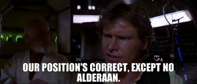

Portfolio / System / 404
HTTP 404
Page Not Found
Error Details
Looks like this file went missing.
The page you're looking for may have moved, or the address might have a typo. No problem—there's plenty more to explore.

jack@portfolio:~$GET /requested-page → 404 NOT_FOUND